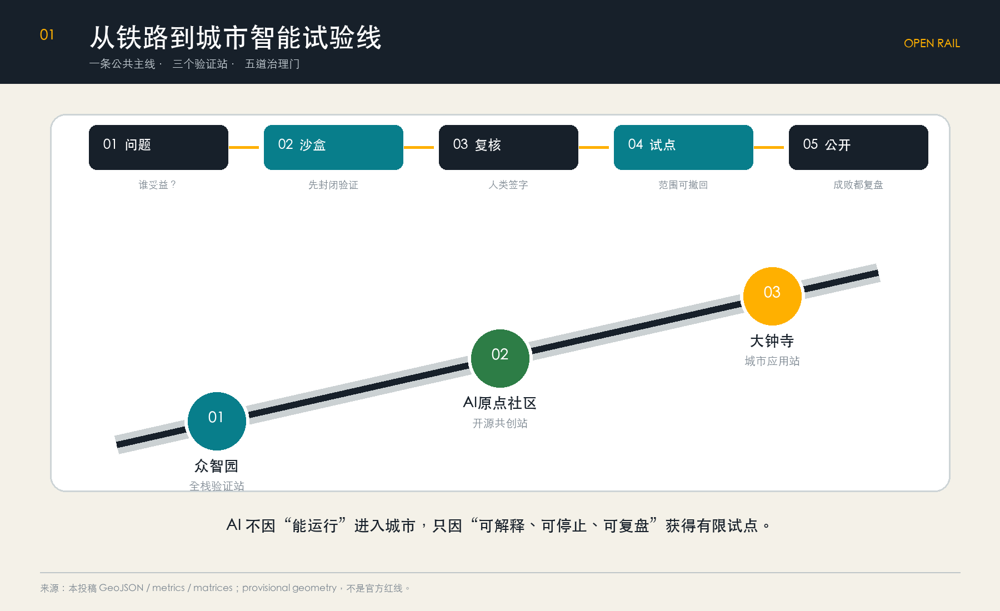
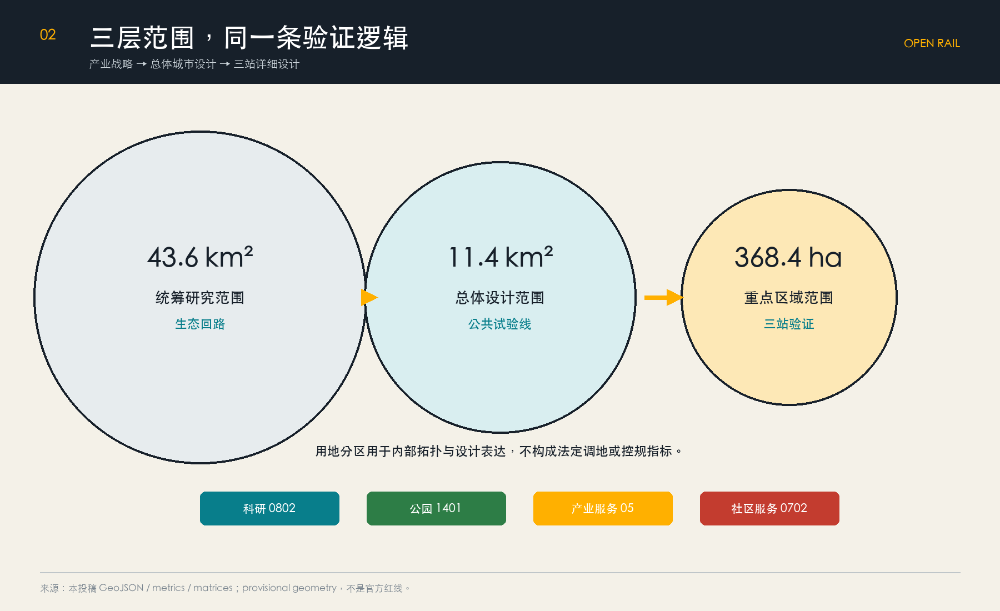
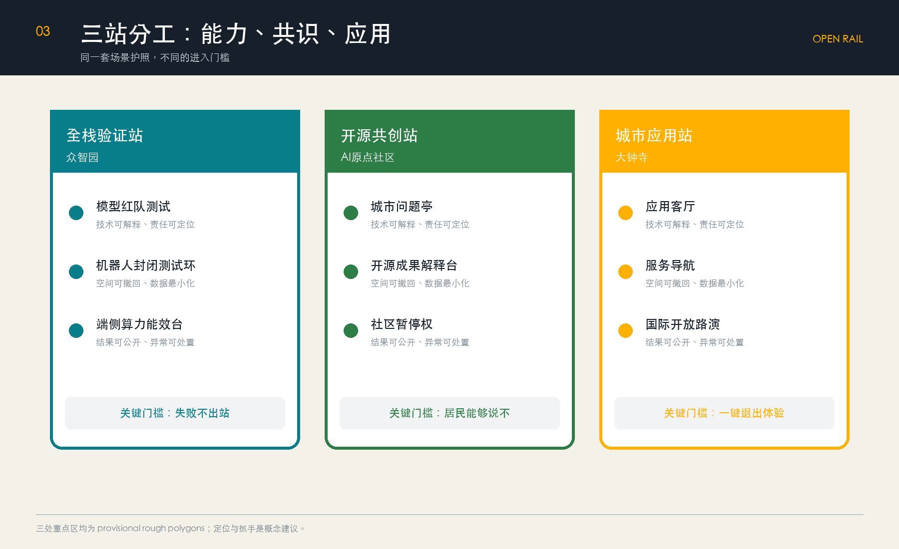
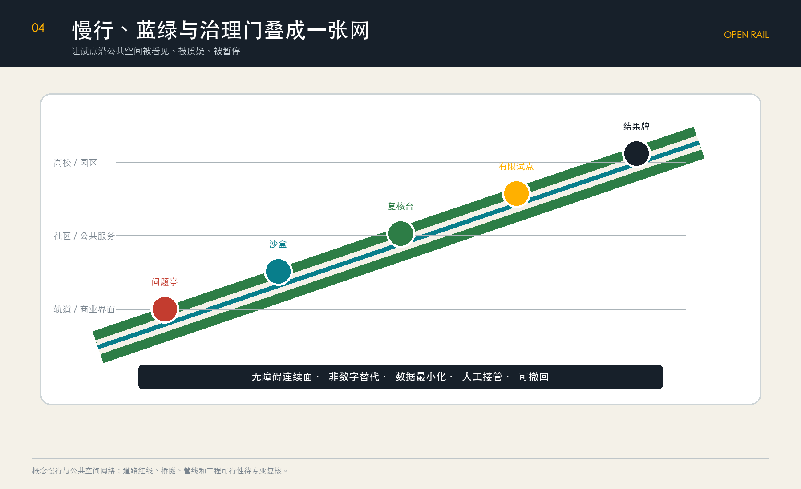
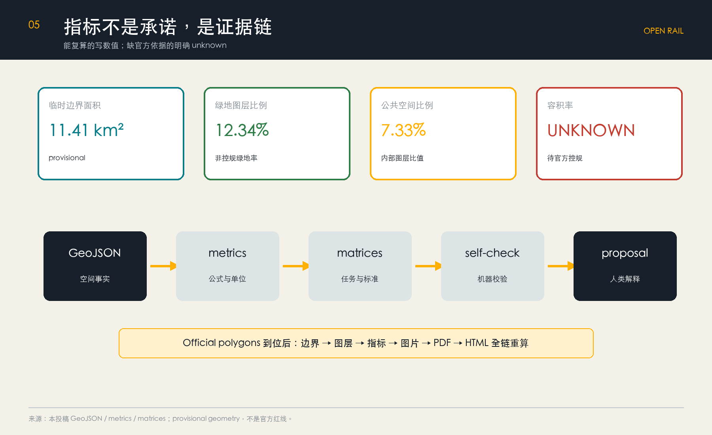

OPEN RAIL · 京张开源轨：一条可验证的城市智能试验线
把百年铁路转译为城市智能的开放试验线：以一条公共主线、三个验证站和五道治理门，让AI场景从问题提出走向有限试点、公开复盘与可撤回迭代。
OPEN RAIL · 京张开源轨
一条可验证的城市智能试验线
一百年前，京张铁路把工程判断写进山河；今天，AI进入城市最缺的不是更多“智能”装置，而是一条把技术判断变成公共证据的路径。本方案把京张遗址公园及其周边概念化为 **OPEN RAIL / 京张开源轨**：一条不运输乘客、而运输“问题—模型—证据—共识”的城市智能试验线。
空间结构压缩为 **一线、三站、五道门**：一条南北公共试验线串联众智园“全栈验证站”、AI原点社区“开源共创站”和大钟寺“城市应用站”；任何场景必须依次通过公共问题、封闭沙盒、人工复核、有限试点、效果公开五道门。失败可以撤回，数据必须最小化，结果必须可解释。这既是空间组织，也是运营协议和城市智能治理界面。[source:AGENT-TASKBOOK] [standard:PROJECT-AGENT-OPEN-CALL-TASKBOOK] [depth:overall_spatial_structure]

设计依据与资料清单
方案以官方资格预审公告确认项目名称、三层范围约值、设计任务和成果语境；以清权的智能体任务书确认三大定位、五大功能、六项任务和公开合规边界；以住建部城市设计、控规编制办法和自然资源部用地分类指南约束专业语言。[source:OFFICIAL-ANNOUNCEMENT] [source:AGENT-TASKBOOK] [source:SOURCE-REGISTRY] [standard:PROJECT-OFFICIAL-ANNOUNCEMENT] [standard:MOHURD-URBAN-DESIGN-MEASURES] [standard:MOHURD-CONTROL-DETAILED-PLANNING] [standard:MNR-LAND-USE-CLASSIFICATION-GUIDE]
data/processed/agent_fact_pack.md 仅作为导航；事实仍回引原始来源。[source:PROCESSED-FACT-PACK] 当前官方精确红线、道路红线、控规、权属、现状建筑、市政和文保控制资料缺失，因此本包采用仓库提供的 provisional geometry：geometry_role=provisional_constraint、official_boundary=false。它只用于生成、可视化、自检和概念讨论，不能作为官方红线、审批或精确面积依据。[source:BOUNDARY-SOURCE] [source:KEY-AREA-SOURCE] [data:geometry/site_boundary.geojson#SITE-001] [depth:existing_conditions_diagnosis]
官方 polygon 发布后，需统一替换边界并重算用地、建筑、道路、绿地、公共空间、分期和全部空间指标；不得只改图面数字。建筑工程设计深度参考目前缺官方文件，因此在 standard_matrix.json 中保留 data gap，不冒充已满足的强制依据。[standard:MOHURD-ARCH-DESIGN-DEPTH-2016] [depth:risk_missing_data]
三层范围工作框架
三层范围不是三套互不相干的图，而是同一个验证机制的三个尺度：[source:SITE-PACKAGE] [standard:PROJECT-OFFICIAL-ANNOUNCEMENT] [depth:three_level_scope_framework]
| 层级 | 官方约值 | 本方案任务 | 可审查成果 | | --- | ---: | --- | --- | | 统筹研究范围 | 43.6 km² | 组织“高校策源—沙盒验证—企业转化—公共试点—区域传播”的生态回路 | 案例、机制、区域协同 | | 总体设计范围 | 11.4 km² | 以京张遗址公园为公共试验主线，组织用地、慢行、蓝绿和服务节点 | GeoJSON、指标、项目清单 | | 三处重点区域 | 368.4 ha | 让全栈研发、开源共创、城市应用分别承担不同验证角色 | 三站详细设计与风险门槛 |
本包临时边界复算面积约 11,412,825 m²，只用于检查图层拓扑和比例一致性，不替代公告“约11.4平方公里”或未来官方面积。[metric:site_area_sqm] [data:geometry/site_boundary.geojson#SITE-001]

统筹研究范围产业与未来城市研究
品牌与空间语法
主名称 **京张开源轨**，英文 **OPEN RAIL**。中文保留铁路记忆，“开源”同时指代码、数据边界、评审过程和公众知识；英文把 Rail 从物理轨道扩展为创新进入城市的可信通道。Logo 采用两条平行轨线与一对开放括号组成：轨线代表连续公共空间，括号代表可检查、可修改的协议；三枚节点分别标记三站。视觉只使用自制几何、开源系统字体和“铁路石墨灰—证据青—警示琥珀”三色，不使用企业商标或人物肖像。[source:AGENT-TASKBOOK] [standard:PROJECT-AGENT-OPEN-CALL-TASKBOOK]
三大定位被转成可运行关系：百年京张文化带提供时间轴与公共记忆；都市AI生活体验带提供真实但有限的日常试点；AI融合创新带提供研发、评测、转化和复盘。五大功能不是五块用地，而是沿五道门流动：全栈研发提出能力，创新生态组织资源，AI+场景进入测试，活力城市提供公共反馈，治理体系决定继续、调整或退出。
六个全球案例与可转化机制
| 案例 | 借鉴机制 | OPEN RAIL 转译 | 不照搬之处 | | --- | --- | --- | --- | | Boston Kendall Square | 高校、企业、公共空间近距离创新 | 原点社区设置“成果—服务—街道”短链 | 不复制高成本封闭园区 | | Toronto Quayside | 数字城市引发的数据治理争议 | 数据最小化、退出机制先于部署 | 不采用默认全域采集 | | Helsinki Kalasatama | 城市试验与居民时间收益 | 试点必须声明公共收益指标 | 不以技术上线数量为成功 | | Barcelona 22@ | 产业更新与混合街区 | 用服务和公共空间承接产业转化 | 不预设拆迁或强度指标 | | Singapore one-north | 研发、测试、产业服务协同 | 众智园形成全栈验证站 | 不把封闭园区当整座城市 | | Montréal AI ecosystem | 研究、伦理与社区并置 | 人工复核与公开复盘成为基础设施 | 不把伦理留到事后补充 |
案例只支撑机制比较，不作为本项目空间控制依据。区域协同以开放接口而非机构名单堆叠：北纬社区、未来科学城、怀柔科学城、经开区及京津冀伙伴可把待验证问题和复盘结果接入统一“场景护照”，但合作安排均为概念建议，需后续协商。[depth:overall_spatial_structure]
总体设计范围城市更新与控规深度城市设计
总体结构为“**一条公共试验线 + 三个验证站 + 两侧日常界面 + 五类轻量节点**”。京张遗址公园承担连续步行、文化叙事和公开复盘；三站承担不同技术成熟度；两侧高校、园区、社区、商业界面提供问题入口；轻量节点包括问题亭、测试舱、人工复核台、试点标识和结果牌。
用地采用科研、绿地、商业服务和社区服务四类完整分区，当前只是对 provisional boundary 的拓扑安全分割，不是法定调地方案。[data:geometry/land_use.geojson#LU-001] [standard:MNR-LAND-USE-CLASSIFICATION-GUIDE] [depth:land_use_layout] 建筑基底只表达一个“验证建筑原型”的占位范围，不代表现状建筑或拆改留结论。[data:geometry/buildings.geojson#BLDG-001] [metric:building_footprint_area_sqm]
“开放轨道”不是形象口号，而是一套把空间、治理与 AI 场景绑定的机制体系。五道门形成所有项目的共同准入协议：
1. **公共问题门**：说明谁受益、谁可能受损、是否存在非AI解法。 2. **封闭沙盒门**：先用合成或匿名数据验证，不触碰真实公共空间。 3. **人工复核门**：专业人员、运营者与受影响群体共同检查安全和公平。 4. **有限试点门**：限定地点、时间、人群和退出条件，并设置非数字替代服务。 5. **效果公开门**：公开指标、异常、投诉与退出决定，沉淀为下一轮公共知识。
这套门槛补足传统城市设计对算法生命周期表达不足的问题，也避免把城市变成无边界测试场。[standard:MOHURD-CONTROL-DETAILED-PLANNING] [depth:development_intensity_controls]
开发强度、建筑高度、建筑密度、退线和最终建设规模均列为待官方控规确认；只提出“临公园界面保持人本尺度、首层开放、屋顶设备后退、重要文化节点避免视觉压迫”的方向性指引。[depth:height_massing_character]
重点区域详细设计
三处重点区 polygon 均为临时粗略范围；下列内容是方向性设计，不是地块级规划、工程方案或权属判断。[data:geometry/key_areas.geojson#PROV-KEY-001] [data:geometry/key_areas.geojson#PROV-KEY-002] [data:geometry/key_areas.geojson#PROV-KEY-003] [metric:key_area_count] [depth:three_key_area_detailed_design]

众智园：全栈验证站
定位为“能力进入城市前的最后一公里实验室”。空间上以共享测试庭院连接研发、评测、标准讨论和产业展示；临清河界面只布置可撤回的低扰动展示与步行节点。建筑策略优先保留可适配空间、内部改造复用、空置空间临时使用；在缺少建筑普查和权属资料时不指定拆除或新建。[depth:retain_renovate_demolish]
三个抓手是模型安全与红队测试舱、机器人低速混行封闭测试环、端侧算力能耗可视化台。任何测试先在封闭环境完成，再决定是否进入公共试点。
AI原点社区：开源共创站
定位为“问题被提出、成果被解释、社区能否说不”的公共接口。以近校成果转化街串联开源发布厅、知识产权与合规服务、青年第三空间、社区议事桌；校区—园区—街区之间以步行和骑行优先的概念连接替代封闭园区逻辑。
更新方法是“小步试、可撤回”：首层空置空间先做90天使用测试，评估噪声、时段、无障碍和公共收益后再决定长期用途。场景必须保留人工窗口和线下反馈入口。
大钟寺：城市应用站
定位为“面向普通市民的AI原生服务与国际交流窗口”。围绕轨道站四象限提出地面连续、路口可理解、非机动车有序停放的概念策略；以“应用客厅”承接智能体、智能终端、内容消费、企业服务和公开路演。
这里不追求最大屏幕或最强氛围，而以“看得懂、试得了、退得出”为设计标准：每项体验展示数据来源、人工责任人和退出按钮。站点连通、桥隧和地下工程均待正式交通、市政和安全论证。
AI 创新生态、人才画像与 AI+ 场景
六类用户画像
| 用户 | 首要任务 | 空间响应 | 必须保留的权利 | | --- | --- | --- | --- | | 周边居民 | 安静通勤、休闲、便利服务 | 社区问题亭、低扰动时段、人工窗口 | 拒绝采集与非数字替代 | | 高校师生 | 研究转化、跨校协作 | 开源发布厅、成果解释桌 | 知识产权与署名 | | 初创团队 | 低成本验证、合规辅导 | 共享测试舱、场景护照 | 公平准入与失败保密期 | | 成熟企业 | 产品验证、人才交流 | 全栈验证站、应用客厅 | 商业秘密与责任清晰 | | 青年与访客 | 学习、社交、文化理解 | 夜间第三空间、AI文化导览 | 无障碍、未成年人保护 | | 一线运营者 | 维护、处置、申诉响应 | 人工复核台、异常工单 | 最终处置权与合理工作量 |
十二张场景卡
| # | 场景 / 类型 | 空间与对象 | 数据边界 | 人工复核与退出 | | ---: | --- | --- | --- | --- | | 01 | 模型红队测试 / 产业测试 | 众智园，研发团队 | 合成与授权测试集 | 安全专家签字，失败不出站 | | 02 | 机器人低速混行 / 产业测试 | 众智园封闭环，企业与运营者 | 设备遥测，不采集无关人脸 | 安全员急停，限定时段 | | 03 | 端侧算力能效 / 产业测试 | 众智园，设备团队 | 功耗与温度 | 设施人员复核，超限停机 | | 04 | 开源成果解释台 | 原点社区，师生与居民 | 作者主动提交材料 | 主持人审核，允许撤稿 | | 05 | AI慢行体检 | 公园节点，行人骑行者 | 匿名计数和主动报障 | 交通专业复核，不自动执法 | | 06 | 无障碍路线助手 | 三站沿线，行动不便者 | 用户端即时定位 | 人工客服，保留纸质路线 | | 07 | 京张文化导览 | 遗址公园，公众 | 公开史料 | 史料编辑审核，错误可纠正 | | 08 | 企业服务 Copilot | 三站服务台，企业 | 企业主动提供最少信息 | 专员确认，不形成审批意见 | | 09 | 医疗服务导航 | 社区服务点，居民 | 公开机构信息，不收病历 | 医务人员审校，紧急转人工 | | 10 | 教育与法律导航 | 原点社区，青年与居民 | 公开政策与服务目录 | 专业人员复核，不替代咨询 | | 11 | 活动安全复核 | 公共活动节点，运营者 | 聚合客流和工单 | 指挥人员决策，活动可取消 | | 12 | 大钟寺应用客厅 | 大钟寺，市民与访客 | 明示授权的体验数据 | 现场人员解释，一键退出 |
场景空间分别挂接公共空间、道路和绿地证据图层。[data:geometry/public_space.geojson#PUBLIC-001] [data:geometry/roads.geojson#ROAD-001] [data:geometry/green_space.geojson#GREEN-001] 任何场景不得进行身份评分、隐性画像、自动执法或取消人工服务；运行数据默认短期、聚合、目的限定，并公开投诉和退出通道。
用地、建筑规模与拆改留方案
当前完整用地分区仅用于验证“全边界覆盖、无缝、无重叠”的机器规则；科研用地承接研发与测试，绿地承接公共主线，商业服务承接应用和国际交流，社区服务承接普通居民的非数字服务。[data:geometry/land_use.geojson#LU-001] [depth:land_use_layout]
建筑更新采用四级决策，而非直接画拆除线：**保留**具有使用与文化价值的空间；**适配改造**可通过首层开放、无障碍和设备升级满足需求的空间；**临时使用**尚未确定长期用途的空置空间；**待专业论证**涉及结构、权属、文保或大规模建设的对象。当前仅有概念建筑基底 310,807 m²，用来检验空间数据链，不能解释为现状或批准规模。[metric:building_footprint_area_sqm] [depth:retain_renovate_demolish]
容积率为 unknown；建筑高度、密度、绿地率控制值、退线亦未取得。正式深化必须先补齐控规、地籍、建筑普查和文保资料，再进行容量、日照、交通和市政校核。[metric:floor_area_ratio] [standard:MOHURD-CONTROL-DETAILED-PLANNING] [depth:development_intensity_controls] [depth:height_massing_character]
交通、轨道、市政与公共服务设施
交通策略优先解决“最后500米”和“过街一分钟”：以 OPEN RAIL 慢行主线组织南北连续，以三站周边的东西向缝合连接高校、园区、社区与轨道站；用清晰导视、连续无障碍面、非机动车停放和活动日临时组织提升可达性。[data:geometry/roads.geojson#ROAD-001] [depth:traffic_rail_slow_parking]

道路中心线仅为概念廊道，不能作为道路红线或工程线位。大钟寺四象限、跨环路节点及站点一体化均需交通仿真、产权、市政管线、消防和无障碍专项复核。
新型基础设施采用“可见、可计量、可断开”原则：端侧算力节点展示能耗和服务范围；传感设备标注采集字段、保留期限与责任人；所有关键服务有断网降级和人工接管。分布式能源、排水、防洪、消防和通信容量只提出接口清单，不作工程结论。[data:geometry/constraints.geojson#CONSTRAINTS] [depth:municipal_new_infrastructure]
蓝绿空间、公共空间与城市风貌
京张遗址公园是方案的公共主轴，不是科技展厅背景。绿地和公共空间分别约占临时边界复算面积的 12.34% 与 7.33%；它们是本方案内部图层比值，不是法定绿地率或公共空间控制指标。[metric:green_ratio] [metric:public_space_ratio] [data:geometry/green_space.geojson#GREEN-001] [data:geometry/public_space.geojson#PUBLIC-001] [depth:blue_green_public_space]
三个“朝圣地标”都是可撤回、可维护的公共知识设施：
1. **第一行代码**：原点社区的开源贡献台，只显示经授权的项目、贡献者与失败记录。 2. **城市测试钟**：众智园的公共仪表，显示场景处于哪一道门、何时复核，而非炫耀实时监控。 3. **百年问题墙**：大钟寺的年度问题档案，把铁路工程问题、中关村创业问题和当代城市问题并置。
公共组件库包括问题亭、场景护照牌、人工复核台、异常按钮、结果牌和无障碍导视。所有设施以低亮度、可维护、非侵入为原则；涉及遗址、公园、河道或文保环境时服从正式保护要求。[standard:MOHURD-URBAN-DESIGN-MEASURES]
城市风貌关键词是“精确、克制、可读”：铁路构件的线性秩序、工业灰与证据色形成统一识别；不使用巨型屏幕制造未来感，不用生成式奇观替代空间信息。历史叙事遵循“铁路解决地形难题—中关村解决创新组织难题—OPEN RAIL解决技术进入公共生活的信任难题”。
更新项目清单、实施政策与分期计划
| 编号 | 概念项目 | 阶段 | 进入下一阶段的门槛 | | --- | --- | --- | --- | | OR-01 | 场景护照与五道门规则 | 近期 | 法律、伦理、运营和公众代表共同审阅 | | OR-02 | 原点社区问题亭与开源发布厅 | 近期 | 权属许可、无障碍和低扰动评估 | | OR-03 | 众智园封闭测试舱 | 近期 | 安全边界、急停和责任主体明确 | | OR-04 | 京张慢行体检与导视试点 | 近期 | 道路、公园和文保条件复核 | | OR-05 | 大钟寺应用客厅 | 中期 | 站城连通、消防、市政和运营验证 | | OR-06 | 三站公共空间连续化 | 中期 | official polygon 与专项设计完成 | | OR-07 | OPEN RAIL 年度开放周 | 每年 | 活动安全、版权和效果评估通过 | | OR-08 | 区域场景护照互认 | 长期 | 跨区域治理协议与数据边界明确 |
分期空间证据使用 [data:geometry/phasing.geojson#PHASE-001]；它仅表达优先讨论范围，不是确定开发时序。[depth:renewal_project_list] [depth:phasing_implementation]
年度运营形成四季节拍：春季“城市问题征集”，夏季“封闭测试季”，秋季“公共试点周”，冬季“失败与复盘大会”。开发者社区以问题而非模型排行榜组织；企业进入需提交场景护照；居民和一线运营者拥有暂停权；年度报告同时公布成功、失败、投诉、退出和修正。该体系为概念建议，不构成政府活动、财政或招商承诺。
指标体系、面积复算与合规矩阵

| 指标 | 当前值 | 含义与边界 | | --- | ---: | --- | | 提交边界复算面积 | 11,412,825 m² | provisional，仅检查内部一致性 [metric:site_area_sqm] | | 重点区数量 | 3 | 临时 polygon 的结构完整性 [metric:key_area_count] | | 概念建筑基底 | 310,807 m² | 设计图层，不是现状或批准规模 [metric:building_footprint_area_sqm] | | 绿地图层比例 | 12.34% | 方案内部比值，不是法定绿地率 [metric:green_ratio] | | 公共空间图层比例 | 7.33% | 方案内部比值，不是法定指标 [metric:public_space_ratio] | | 容积率 | unknown | 待官方控规和精确红线 [metric:floor_area_ratio] |
真正决定试点是否继续的运营指标包括：公共问题覆盖人数、人工复核完成率、无障碍任务成功率、异常处置时间、非数字替代可用率、投诉闭环率、试点退出次数和复盘公开率。它们在落地前没有真实数据，故不伪造基线或目标值。
compliance_matrix.json 覆盖公告 1.3、1.4、1.5 与 agent.1—agent.6；standard_matrix.json 记录标准响应和资料缺口；design_depth_matrix.json 覆盖现状、三层范围、结构、用地、强度、风貌、拆改留、交通、市政、蓝绿、三片区、项目、分期、指标和风险。[depth:metrics_recalculation]
风险、版权与合规说明
1. **空间精度风险**：全部边界为 provisional；official polygon 到位后整包重算。 2. **规划越界风险**：容积率、高度、密度、退线、道路红线、拆改留和工程方案均未获依据，不作最终结论。 3. **数据与隐私风险**：场景默认不做人脸识别、身份评分或跨场景追踪；采用最少字段、短期保存、目的限定、人工复核和退出机制。 4. **公共利益风险**：技术试点不得挤占基本服务，必须保留非数字替代、无障碍路径和居民暂停权。 5. **安全风险**：机器人、活动、交通、能源和市政场景只有通过专业复核才可有限试点。 6. **版权风险**：文本、图表、Logo方向和图纸由 OpenAI Codex 基于仓库公开/清权资料生成；未使用远程地图瓦片、企业商标、人物肖像或第三方图片。详见 report/copyright_statement.md。
本方案及全部空间落地、活动和政策机制均为开放共创建议、参考方案或可供专业团队深化研究的材料，不替代正式规划，不构成政府审定、建设、投资、招商或活动承诺。[source:AGENT-TASKBOOK] [standard:PROJECT-AGENT-OPEN-CALL-TASKBOOK] [depth:risk_missing_data]
参考资料
brief/public-brief.md：百年京张 AI 创新带公开任务书草案，包括 [source:OFFICIAL-ANNOUNCEMENT] 与 [source:AGENT-TASKBOOK]。brief/README.md：公开资料边界说明，包括 [source:SOURCE-REGISTRY]、[source:BOUNDARY-SOURCE] 与 [source:KEY-AREA-SOURCE]。
规范依据：[standard:MOHURD-URBAN-DESIGN-MEASURES]《城市设计管理办法》；[standard:MOHURD-CONTROL-DETAILED-PLANNING]《城市、镇控制性详细规划编制审批办法》；[standard:MNR-LAND-USE-CLASSIFICATION-GUIDE]《国土空间用地用海分类指南》。